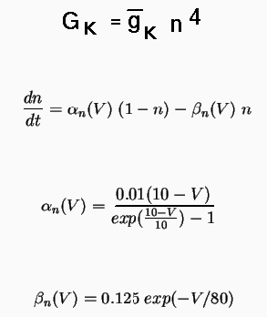

You can find prototype definitions for many specific types of channels in the genesis/Scripts/neurokit/prototypes directory. The files in this directory, LIST and LIST.description, summarize the ones that are available.
Many of these prototype files make use of the variable EREST_ACT, which can be changed to another value, in order to shift the voltage dependence of the steady state activation and time constant up or down. For example, hh_tchan.g was designed for a mitral cell simulation with a resting potential of -0.06 volts. The simplecell simulation changed this to -0.07 volts for use in a cell that has a resting potential of -0.07 volts.
At some point, you may need to make more extensive changes in these scripts, or write your own. As a start, we will examine the K channel that is implemented with a tabchannel object by the make_K_hh_tchan function in hh_tchan.g. Older GENESIS simulations, such as tutorial3.g, implement this type of channel with the hh_channel object. We recommend that you use the faster and more versatile tabchannel, instead. genesis/Scripts/tutorials/newtutorial3.g shows how to use tabchannels instead of the hh_channels that are used in tutorial3.g.
The basic equations that determine the conductance of the K channel in the squid giant axon are:

The simulator will solve the equation for dn/dt, so it is only necessary to specify the maximum conductance, represented by the field Gbar in the tabchannel object, the exponents for up to three gates (of which we only have one, n), and tables to represent the voltage dependence of the last two equations for the rate variables alpha and beta.
The relevant part of hh_tchan.g is
str chanpath = "K_hh_tchan"
create tabchannel {chanpath}
setfield ^ Ek {EK} Gbar {360.0*SOMA_A} Ik 0 Gk 0 \
Xpower 4 Ypower 0 Zpower 0
setupalpha {chanpath} X {10e3*(0.01 + EREST_ACT)} -10.0e3 \
-1.0 {-1.0*(0.01 + EREST_ACT)} -0.01 125.0 0.0 0.0 \
{-1.0*EREST_ACT} 80.0e-3
This sets the reversal potential Ek to the value previously assigned to the variable EK, and the exponent for the n gate (represented by the X gate field of the tabchannel) to 4. As there is no inactivation or other gate, the exponents for the Y and Z gates are set to 0 (the default). Gbar will normally be set by the cell reader, but it is given the Hodgkin-Huxley value of 360 S/m^2 times the soma area, in case it is used without the cell reader, with an appropriate value of SOMA_A. Setting Ik and Gk is not really necessary, as they will be recalculated by the simulator.
The function setupalpha uses a generalized version of the Hodgkin-Huxley rate variables alpha and beta, namely (A + B*Vm)/(C + exp((Vm + D)/F)), in order to set up the tabchannel tables. The 10 arguments correspond to the A, B, C, D, and F parameters for alpha and for beta. A similar function, setuptau, allows this form to represent the voltage-dependent activation time constant and steady state activation, instead. A large percentage of published voltage-dependent Hodgkin-Huxley type channel models fit this general form. For the others, one has to fill the tables with either an equation evaluated in a loop, or a set of experimentally measured values. The documentation for tabchannel gives the details. It would also be useful to look at the documentation for setupalpha, setuptau, tweakalpha, and tweaktau.
Chapter 19 of the BoG covers the use of tabchannels to make calcium-dependent and other types of channels, using examples from the traub91chan.g and ASTchan.g prototype files. These files are extensively commented, and illustrate many of the ways to use a tabchannel. For Ca-dependent channels, be sure to read the documentation for the Ca_concen object.